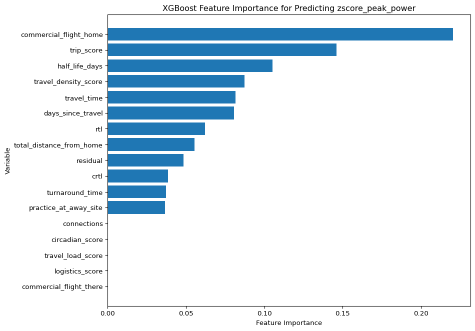

def assign_rtl_category(value):if pd.isna(value):return np.nanif value <4:return"Minimal"if value <=9:return"Low"if value <=18:return"Moderate"if value <30:return"High"return"Very High"def assign_crtl_category(value):if pd.isna(value):return np.nanif value <120:return"Minimal"if value <=240:return"Low"if value <=380:return"Moderate"if value <=550:return"High"return"Very High"daily_df["rtl_category"] = daily_df["rtl"].apply(assign_rtl_category)daily_df["crtl_category"] = daily_df["crtl"].apply(assign_crtl_category)final_output["rtl_category"] = final_output["rtl"].apply(assign_rtl_category)final_output["crtl_category"] = final_output["crtl"].apply(assign_crtl_category)
This visualization shows the progressive RTL and CRTL values across the season, with bars representing daily RTL and a line for cumulative CRTL. One can see how travel stress accumulates over time and identify any peaks that may correspond to demanding travel trips.
This visualization shows the relationship between average jump peak power and CRTL on the date of the jump (through April 21, 2026), allowing analysis on if there are any trends or correlations between travel load and jump performance. For example, if there is a correlation between higher CRTL values and lower average peak power, it may suggest that accumulated travel stress is negatively impacting jump performance. However, if there is no relationship, it may indicate that other factors are more influential on jump performance than travel load.
# keep only jumps within 0-7 days after travel for travel-response modelingcurrent_jump_df.loc[ (current_jump_df["days_since_travel"].isna()) | (current_jump_df["days_since_travel"] <0) | (current_jump_df["days_since_travel"] >7), [ "travel_date_home","travel_time","total_distance_from_home","connections","commercial_flight_there","commercial_flight_home","practice_at_away_site","return_time","turnaround_time","rtl","crtl","trip_score","residual","half_life_days","circadian_score","travel_load_score","logistics_score","travel_density_score","days_since_travel"]] = np.nan
# temporal split with fall/pre-season for cluster formation and spring only for prediction# here, fall always means pre-season (from the first day of training until the first travel trip)pre_start = pd.Timestamp("2025-08-01")pre_end = pd.Timestamp("2026-02-04")spring_start = pd.Timestamp("2026-02-05")spring_end = pd.Timestamp.today().normalize()# fall jumps used only to define baselinepre_jump_df = current_jump_df[ current_jump_df["date_jump"].between(pre_start, pre_end)].copy()# spring jumps are the actual modeling observationsspring_jump_df = current_jump_df[ current_jump_df["date_jump"].between(spring_start, spring_end)].copy()print("pre_jump_df:", pre_jump_df.shape)print("spring_jump_df:", spring_jump_df.shape)
pre_jump_df: (632, 23)
spring_jump_df: (328, 23)
CALCULATE ATHLETE-SPECIFIC FALL BASELINE AND SPRING DEVIATION FROM BASELINE
# athlete-specific fall baseline from raw peak powerpre_baseline_df = ( pre_jump_df .groupby("athlete_id", as_index=False) .agg( pre_peak_power_mean=("peak_power", "mean"), pre_peak_power_std=("peak_power", "std"), n_pre_jumps=("peak_power", "count")))pre_baseline_df["pre_peak_power_std"] = pre_baseline_df["pre_peak_power_std"].replace(0, np.nan)
# spring modeling rows with fall baseline merged in for z-score calculationspring_cbase = spring_jump_df.merge( pre_baseline_df, on="athlete_id", how="left").copy()# keep only athletes with enough fall baseline infospring_cbase = spring_cbase[ (spring_cbase["n_pre_jumps"] >=3) & (spring_cbase["pre_peak_power_std"].notna())].copy()# rebuild z-score relative to the athlete's fall baselinespring_cbase["zscore_peak_power"] = ( (spring_cbase["peak_power"] - spring_cbase["pre_peak_power_mean"]) / spring_cbase["pre_peak_power_std"])# spring deviation from baseline where target is change from fall baselinespring_cbase["pctchange_peak_power"] = ( (spring_cbase["peak_power"] - spring_cbase["pre_peak_power_mean"]) / spring_cbase["pre_peak_power_mean"]) *100
# fit one model for variable importancerf_model_final = RandomForestRegressor( n_estimators=300, max_depth=5, min_samples_leaf=2, random_state=42)rf_model_final.fit(X_rf, y_rf)importance_df = pd.DataFrame({"variable": rf_model_vars,"importance": rf_model_final.feature_importances_}).sort_values("importance", ascending=False)importance_df.head(15)
variable
importance
16
days_since_travel
0.407117
5
travel_time
0.092421
6
total_distance_from_home
0.069284
9
commercial_flight_home
0.067801
0
rtl
0.048690
2
trip_score
0.044615
1
crtl
0.036693
3
residual
0.034704
7
connections
0.032749
13
travel_load_score
0.031293
8
commercial_flight_there
0.026531
14
logistics_score
0.024641
12
circadian_score
0.023565
15
travel_density_score
0.021423
11
turnaround_time
0.018179
BUILD BASELINE PREDICTIVE MODEL WITHOUT RTL AND CRTL
# baseline predictive model without rtl/crtlrf_model_vars_no_rtl = ["trip_score","residual","half_life_days","travel_time","total_distance_from_home","connections","commercial_flight_there","commercial_flight_home","practice_at_away_site","turnaround_time","circadian_score","travel_load_score","logistics_score","travel_density_score","days_since_travel"]rf_model_df_no_rtl = spring_cbase[ ["athlete_id", "date_jump", "zscore_peak_power", "peak_power"] + rf_model_vars_no_rtl].copy()# keep rows with a valid spring targetrf_model_df_no_rtl = rf_model_df_no_rtl[rf_model_df_no_rtl["zscore_peak_power"].notna()].copy()# fill predictors with zerosfor col in rf_model_vars_no_rtl: rf_model_df_no_rtl[col] = rf_model_df_no_rtl[col].replace([np.inf, -np.inf], np.nan) rf_model_df_no_rtl[col] = rf_model_df_no_rtl[col].fillna(0)rf_model_df_no_rtl[rf_model_vars_no_rtl] = rf_model_df_no_rtl[rf_model_vars_no_rtl].fillna(0)X_rf_no_rtl = rf_model_df_no_rtl[rf_model_vars_no_rtl]y_rf_no_rtl = rf_model_df_no_rtl["zscore_peak_power"]rf_groups_no_rtl = rf_model_df_no_rtl["athlete_id"]rf_logo_no_rtl = LeaveOneGroupOut()rf_pred_rows_no_rtl = []for train_idx, test_idx in rf_logo_no_rtl.split(X_rf_no_rtl, y_rf_no_rtl, groups=rf_groups_no_rtl): X_train_no_rtl = X_rf_no_rtl.iloc[train_idx] X_test_no_rtl = X_rf_no_rtl.iloc[test_idx] y_train_no_rtl = y_rf_no_rtl.iloc[train_idx] y_test_no_rtl = y_rf_no_rtl.iloc[test_idx] rf_model_no_rtl = RandomForestRegressor( n_estimators=300, max_depth=5, min_samples_leaf=2, random_state=42 ) rf_model_no_rtl.fit(X_train_no_rtl, y_train_no_rtl) y_pred_no_rtl = rf_model_no_rtl.predict(X_test_no_rtl) fold_df_no_rtl = rf_model_df_no_rtl.iloc[test_idx][["athlete_id", "date_jump", "zscore_peak_power", "peak_power"]].copy() fold_df_no_rtl["pred_zscore_peak_power"] = y_pred_no_rtl rf_pred_rows_no_rtl.append(fold_df_no_rtl)rf_pred_results_no_rtl = pd.concat(rf_pred_rows_no_rtl, ignore_index=True)rmse_rf_no_rtl = np.sqrt(mean_squared_error(rf_pred_results_no_rtl["zscore_peak_power"], rf_pred_results_no_rtl["pred_zscore_peak_power"]))mae_rf_no_rtl = mean_absolute_error(rf_pred_results_no_rtl["zscore_peak_power"], rf_pred_results_no_rtl["pred_zscore_peak_power"])r2_rf_no_rtl = r2_score(rf_pred_results_no_rtl["zscore_peak_power"], rf_pred_results_no_rtl["pred_zscore_peak_power"])print("LOAO RMSE (no RTL/CRTL):", round(rmse_rf_no_rtl, 3))print("LOAO MAE (no RTL/CRTL):", round(mae_rf_no_rtl, 3))print("LOAO R^2 (no RTL/CRTL):", round(r2_rf_no_rtl, 3))rf_pred_results_no_rtl.head(5)
LOAO RMSE (no RTL/CRTL): 1.478
LOAO MAE (no RTL/CRTL): 1.038
LOAO R^2 (no RTL/CRTL): 0.049
athlete_id
date_jump
zscore_peak_power
peak_power
pred_zscore_peak_power
0
35
2026-02-05
1.023700
3513.0800
1.001315
1
35
2026-02-12
-3.970277
3052.7635
1.366782
2
35
2026-02-17
-12.637521
2253.8660
0.111987
3
35
2026-02-24
-4.174048
3033.9810
0.213205
4
35
2026-02-26
-2.986293
3143.4615
1.242231
# fit one model for variable importancerf_model_final_no_rtl = RandomForestRegressor( n_estimators=300, max_depth=5, min_samples_leaf=2, random_state=42)rf_model_final_no_rtl.fit(X_rf_no_rtl, y_rf_no_rtl)importance_df_no_rtl = pd.DataFrame({"variable": rf_model_vars_no_rtl,"importance": rf_model_final_no_rtl.feature_importances_}).sort_values("importance", ascending=False)importance_df_no_rtl.head(15)
variable
importance
14
days_since_travel
0.414253
3
travel_time
0.124955
4
total_distance_from_home
0.090762
7
commercial_flight_home
0.069792
0
trip_score
0.041949
1
residual
0.041435
10
circadian_score
0.034456
11
travel_load_score
0.032308
2
half_life_days
0.029461
6
commercial_flight_there
0.027508
13
travel_density_score
0.024712
5
connections
0.024268
12
logistics_score
0.022316
9
turnaround_time
0.017927
8
practice_at_away_site
0.003899
The model without RTL and CRTL performed similarly to the model with them, suggesting that they add limited predictive value beyond the other travel features.
BUILD ATHLETE-LEVEL RESPONSE FEATURES FOR CLUSTERING
from sklearn.metrics import silhouette_scoresilhouette_results = []for k inrange(2, 15): km = KMeans(n_clusters=k, random_state=42, n_init=20) labels = km.fit_predict(X_cluster) score = silhouette_score(X_cluster, labels) silhouette_results.append({"k": k,"silhouette_score": score })silhouette_df = pd.DataFrame(silhouette_results).sort_values("silhouette_score", ascending=False)silhouette_df.head(5)
k
silhouette_score
0
2
0.644793
2
4
0.345571
5
7
0.341141
4
6
0.310389
6
8
0.304247
A model with five clusters was chosen because it had a relatively high silhouette score and provided more meaningful separation and interpretability than two or three clusters.
XGBoost LOAO RMSE (no RTL/CRTL): 1.477
XGBoost LOAO MAE (no RTL/CRTL): 1.037
XGBoost LOAO R^2 (no RTL/CRTL): 0.05
athlete_id
date_jump
zscore_peak_power
peak_power
pred_zscore_peak_power
0
35
2026-02-05
1.023700
3513.0800
0.998246
1
35
2026-02-12
-3.970277
3052.7635
1.317333
2
35
2026-02-17
-12.637521
2253.8660
0.131834
3
35
2026-02-24
-4.174048
3033.9810
0.217674
4
35
2026-02-26
-2.986293
3143.4615
1.284702
# fit model for variable importancexgb_model_final_no_rtl = XGBRegressor( n_estimators=200, max_depth=3, learning_rate=0.05, subsample=0.8, colsample_bytree=0.8, random_state=42, objective="reg:squarederror")xgb_model_final_no_rtl.fit(X_xgb_no_rtl, y_xgb_no_rtl)importance_df_no_rtl = pd.DataFrame({"variable": xgb_model_vars_no_rtl,"importance": xgb_model_final_no_rtl.feature_importances_}).sort_values("importance", ascending=False)importance_df_no_rtl.head(15)
variable
importance
2
half_life_days
0.282970
14
days_since_travel
0.103402
7
commercial_flight_home
0.098111
3
travel_time
0.093251
0
trip_score
0.083424
11
travel_load_score
0.079308
13
travel_density_score
0.071543
4
total_distance_from_home
0.065210
1
residual
0.044699
9
turnaround_time
0.041684
8
practice_at_away_site
0.036396
5
connections
0.000000
6
commercial_flight_there
0.000000
10
circadian_score
0.000000
12
logistics_score
0.000000
comparison_df = pd.DataFrame({"model": ["Random Forest with RTL/CRTL","Random Forest without RTL/CRTL","XGBoost with RTL/CRTL","XGBoost without RTL/CRTL" ],"rmse": [rmse_rf, rmse_rf_no_rtl, rmse_xgb, rmse_xgb_no_rtl],"mae": [mae_rf, mae_rf_no_rtl, mae_xgb, mae_xgb_no_rtl],"r2": [r2_rf, r2_rf_no_rtl, r2_xgb, r2_xgb_no_rtl]}).sort_values("rmse", ascending=True).reset_index(drop=True)comparison_df
model
rmse
mae
r2
0
XGBoost with RTL/CRTL
1.476734
1.037175
0.050013
1
XGBoost without RTL/CRTL
1.476809
1.036922
0.049916
2
Random Forest with RTL/CRTL
1.477751
1.038475
0.048704
3
Random Forest without RTL/CRTL
1.477757
1.038497
0.048696
CREATE FEATURE IMPORTANCE PLOT FOR XGBOOST MODEL WITH RTL AND CRTL
import matplotlib.pyplot as pltimport pandas as pdxgb_importance_plot_df = pd.DataFrame({"variable": xgb_model_vars,"importance": xgb_model_final.feature_importances_}).sort_values("importance", ascending=True)plt.figure(figsize=(10, 7))plt.barh(xgb_importance_plot_df["variable"], xgb_importance_plot_df["importance"])plt.xlabel("Feature Importance")plt.ylabel("Variable")plt.title("XGBoost Feature Importance for Predicting zscore_peak_power")plt.tight_layout()plt.show()

PREDICT VALUES FOR FUTURE GAMES THIS SEASON
# keep only future trips# html saved on April 21, 2026, so "future" is anything after that datetoday = pd.Timestamp.today().normalize()future_trips = final_df[final_df["travel_date_home"] > today].copy()# forecast rtl and crtl through the rest of the season (uses existing compute_rtl)all_trips = final_df.copy() # past and future already scoredforecast_daily = compute_rtl(all_trips)forecast_daily = compute_crtl(forecast_daily)forecast_daily["rtl_category"] = forecast_daily["rtl"].apply(assign_rtl_category)forecast_daily["crtl_category"] = forecast_daily["crtl"].apply(assign_crtl_category)# flag high-risk future game windowsfuture_flags = forecast_daily[ (forecast_daily["game_date"] > today) & (forecast_daily["rtl_category"].isin(["High", "Very High"]) | forecast_daily["crtl_category"].isin(["High", "Very High"]))].sort_values("game_date")# athlete and future-game risk matrix: expected z-score drop per clustercluster_response = ( spring_cbase.groupby("cluster_name")["zscore_peak_power"].mean().to_dict())athlete_risk = athlete_cdf[["athlete_id", "cluster_name"]].assign( expected_zscore_response=lambda d: d["cluster_name"].map(cluster_response))# cross-join for the staff-facing dashboardfuture_risk_matrix = future_flags.merge(athlete_risk, how="cross")future_risk_matrix["flag"] = np.where( (future_risk_matrix["rtl_category"].isin(["High", "Very High"])) & (future_risk_matrix["cluster_name"].isin(["highly-sensitive", "sensitive"])),"MONITOR", "ok")future_risk_matrix.head(5)
game_date
rtl
crtl
rtl_category
crtl_category
athlete_id
cluster_name
expected_zscore_response
flag
0
2026-04-22
3.000074
1055.807118
Minimal
Very High
35
highly-sensitive
-1.577833
ok
1
2026-04-22
3.000074
1055.807118
Minimal
Very High
36
highly-resilient
1.695054
ok
2
2026-04-22
3.000074
1055.807118
Minimal
Very High
38
sensitive
-0.357336
ok
3
2026-04-22
3.000074
1055.807118
Minimal
Very High
98
moderate-response
0.911859
ok
4
2026-04-22
3.000074
1055.807118
Minimal
Very High
197
highly-resilient
1.695054
ok
CREATE VISUALIZATION OF CLUSTER RESPONSE PROFILES AND FUTURE GAME RISKS